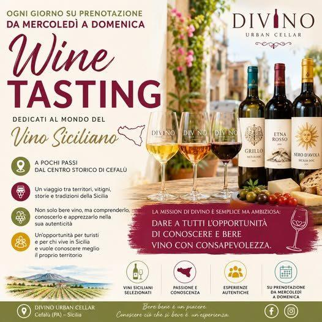

Scoprire la Sicilia attraverso il vino

Scoprire la Sicilia attraverso il vino: l’esperienza Divino.
Ogni giorno, da mercoledì a domenica, su prenotazione dalle ore 18.00, a DIVINO Urban Cellar organizziamo degustazioni dedicate al meraviglioso mondo del vino siciliano.
A pochi passi dal centro storico di Cefalù, offriamo un viaggio che attraversa territori, vitigni, storie e tradizioni che hanno reso la Sicilia una delle regioni vinicole più affascinanti del Mediterraneo. Dall’Etna a Pantelleria, da Trapani a Vittoria, ogni calice racconta una storia diversa.

Non si tratta semplicemente di bere vino, ma di comprenderlo, conoscerlo e apprezzarlo nella sua autenticità.
Pensiamo che questa sia una grande opportunità non solo per i turisti che desiderano vivere un’esperienza autentica durante il loro soggiorno, ma anche per chi vive in Sicilia e vuole approfondire la conoscenza del proprio territorio.
La missione di Divino è semplice ma ambiziosa: dare a tutti l’opportunità di conoscere e bere vino con consapevolezza. Perché dietro ogni bottiglia ci sono persone, sacrifici, cultura, tradizioni e un patrimonio che merita di essere raccontato.
Vi aspettiamo per condividere insieme profumi, sapori ed emozioni che solo il vino siciliano sa regalare.
Bere bene è un piacere. Conoscere ciò che si beve è un’esperienza.
Degustate la Sicilia, un calice alla volta
Da mercoledì a domenica, su prenotazione dalle 18.00, in Via Gibilmanna 16, Cefalù. Prenotazione consigliata — la sala non è enorme.
Prenota la degustazione